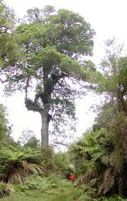

Podocarpaceae
The Podocarpaceae family, commonly known as the Podocarp Family, is the second-largest family of conifers (order Pinales) and the largest primarily centered in the Southern Hemisphere. It includes about 18-20 genera and 170-200 species of evergreen trees and shrubs. Podocarps exhibit remarkable diversity in leaf form, ranging from scale-like to broad leaves resembling those of angiosperms. A key feature is their highly modified female cones, where the seed is often associated with a fleshy structure (epimatium or receptacle) that aids in bird dispersal.
Overview
Podocarpaceae represents the dominant conifer family across much of the Southern Hemisphere, with a distribution reflecting ancient Gondwanan connections. Its members are found in South America, Africa, Madagascar, Southeast Asia, Australia, New Zealand, New Caledonia, and other Pacific islands, with only a few species extending north of the equator into Central America and Asia. They inhabit a range of environments, from tropical rainforests to temperate forests and alpine shrublands.
Unlike many familiar Northern Hemisphere conifers (like pines or firs), podocarps show great variation in leaf morphology. While some have typical needle-like or scale-like leaves, many possess broad, flattened leaves with parallel or radiating veins, making them appear superficially like angiosperms. The family is typically dioecious (separate male and female plants). While male cones are relatively typical small pollen cones, the female (ovulate) cones are highly modified and reduced, often bearing only one or a few seeds. The seed is characteristically associated with either a fleshy outgrowth of the subtending scale (an epimatium) that may partially or fully enclose the seed, or a swollen, fleshy cone axis (receptacle) below the seed. These fleshy, often brightly colored structures attract birds, which are the primary seed dispersers for most species – a strategy convergent with angiosperm fruits.
Several podocarp species are valued for their timber (often called 'yellowwood' or 'pine' locally, e.g., Rimu, Totara, Miro), while others are used in horticulture.
Quick Facts
- Scientific Name: Podocarpaceae
- Common Name: Podocarp Family
- Number of Genera: Approximately 18-20
- Number of Species: Approximately 170-200
- Distribution: Predominantly Southern Hemisphere (South America, Africa, Australasia, SE Asia, Pacific), few extending north.
- Evolutionary Group: Gymnosperms - Conifers - Pinales
Key Characteristics
Growth Form and Habit
Evergreen shrubs or trees, ranging from low-growing alpine shrubs to massive forest canopy trees exceeding 50 meters in height.
Leaves
Leaf morphology is highly variable within the family: leaves can be needle-like (acerose), scale-like (squamiform, often overlapping), awl-shaped (subulate), or commonly broad and flattened (lanceolate, ovate, oblong), resembling angiosperm leaves but lacking complex venation (usually parallel or radiating veins). Leaf arrangement is typically alternate and spiral, but sometimes opposite or subopposite. Leaves are often thick and leathery.
Reproductive Structures (Cones)
Plants are typically dioecious (separate male and female plants), rarely monoecious. As conifers, they bear cones, not flowers.
- Pollen Cones (Male): Usually small (typically 1-3 cm long), cylindrical or ovoid, solitary or clustered in leaf axils or terminally. Composed of numerous spirally arranged microsporophylls, each usually bearing 2 pollen sacs. Pollen grains are often saccate (possessing 2-3 air bladders/wings).
- Ovulate Cones (Female): Highly modified, reduced, and variable. They do not form large, woody cones like pines. Typically consist of one or few fertile cone scales, each bearing a single ovule. The ovule/seed develops in association with specialized structures:
- Epimatium: A fleshy or leathery outgrowth derived from the ovuliferous scale that partly or completely surrounds the mature seed. It is often brightly colored (red, purple, blue) at maturity (e.g., Podocarpus, Dacrycarpus, Prumnopitys).
- Receptacle: The cone axis or bracts below the seed(s) may become swollen, fleshy, and brightly colored (e.g., Prumnopitys, some Podocarpus).
- In some genera (e.g., Dacrydium), the seed is borne exposed on a small woody scale without significant fleshy structures.
These fleshy structures facilitate seed dispersal by birds (ornithochory).
Seeds
Typically one seed develops per fertile scale. The seed is enclosed by or seated upon the fleshy epimatium or receptacle, or sometimes naked on a small scale. The seed coat is usually hard. Cotyledons typically 2.
Chemical Characteristics
Produce various secondary metabolites including resins, terpenoids (diterpenes are common), and lignans. Some species contain compounds like podophyllotoxin precursors. The wood is often valued timber, typically lacking the prominent resin canals found in Pinaceae.
Field Identification
Identifying Podocarpaceae involves recognizing their conifer nature combined with often unique leaf shapes and reproductive structures, especially within their primarily Southern Hemisphere range:
Primary Identification Features
- Habit: Evergreen trees or shrubs (conifers).
- Leaves: Highly variable - needle-like, scale-like, or broad and flattened; usually alternate/spiral.
- Sexual System: Usually dioecious (separate male/female plants).
- Reproductive Structures: Bear cones, not flowers. Pollen cones small. Ovulate cones highly modified.
- Seed Structure: Seed typically solitary per scale, often associated with a fleshy epimatium (covering the seed) or a fleshy receptacle (below the seed), frequently brightly colored. Sometimes seed exposed on a small scale.
- Distribution: Predominantly Southern Hemisphere.
Seasonal Identification Tips
- The fleshy epimatia or receptacles associated with seeds are highly diagnostic when mature, often appearing like berries or drupes.
- Pollen cones are present seasonally (often spring).
- Leaf type (scale, needle, broad) and arrangement are useful year-round characters for genus/species identification.
Common Confusion Points
Distinguishing Podocarpaceae from other groups:
- Taxaceae (Yew Family): Also conifers with fleshy seed structures (arils), but the aril originates differently (from ovule base), is usually open at the apex, and Taxaceae are primarily Northern Hemisphere.
- Cephalotaxaceae (Plum Yew Family): Similar fleshy seed covering, but again primarily Northern Hemisphere and details of cone structure differ.
- Araucariaceae: Also Southern Hemisphere conifers, but typically have very large, woody female cones and often distinctive awl-shaped or broad leaves (Agathis).
- Cupressaceae (Cypress Family): Can have scale-like or needle-like leaves, but female cones are typically woody, leathery, or berry-like (e.g., Juniper 'berries') with multiple seeds per cone, lacking the distinct epimatium/receptacle structure.
- Angiosperms: Broad-leaved podocarps (Podocarpus, Nageia) can be mistaken for angiosperms, but they lack true flowers and fruits, bearing cones (even if highly modified) instead. Look for pollen cones or the characteristic seed structures.
- The combination of Southern Hemisphere distribution, variable leaf morphology, dioecy, and seeds associated with a fleshy epimatium or receptacle is key for Podocarpaceae.
Field Guide Quick Reference (Podocarpaceae)
Look For (mainly S. Hemisphere):
- Coniferous tree or shrub
- Leaves: Variable (scale, needle, broad), usually alternate
- Usually dioecious
- Ovulate cone modified: seed often with fleshy epimatium or receptacle
- Seed usually solitary per fertile scale
- No true flowers or fruits
Key Distinctions:
- Fleshy seed structure (epimatium/receptacle) common (vs. woody cones in Pinaceae, many Cupressaceae)
- Different fleshy structure than Taxaceae aril
- Variable leaf types (incl. broad leaves)
- Different cone structure than Araucariaceae
- Conifer features (vs. Angiosperms)
Notable Examples
Podocarpaceae includes many ecologically and economically important genera:

Podocarpus spp.
Podocarps, Yellowwoods
The largest genus (~100 species), found throughout the family's range. Typically trees or shrubs with flattened, strap-like or lanceolate leaves. Seeds are borne on a fleshy, often red or purple receptacle, sometimes with a small epimatium as well. Several species yield valuable timber.

Dacrydium spp.
Rimu, etc.
A genus of trees found from Southeast Asia to New Zealand. Often characterized by drooping foliage with scale-like or awl-shaped leaves (especially juvenile). The seed sits exposed on a small scale, lacking a prominent fleshy structure. D. cupressinum (Rimu) is a major timber tree in New Zealand.

Prumnopitys spp.
Miro, Matai, Plum Pines
A genus of trees found in South America, New Zealand, New Caledonia, and Australia. Leaves are typically linear and flattened. The seed is completely enclosed within a fleshy, drupe-like epimatium, resembling a small plum. Includes important timber species like Miro (P. ferruginea) and Matai (P. taxifolia).

Afrocarpus spp.
African Yellowwoods
A genus of large trees native to Africa, previously included in Podocarpus. They have spirally arranged, often falcate (curved) leaves and seeds enclosed in a leathery or slightly fleshy epimatium. Important timber trees in Africa.
Phylogeny and Classification
Podocarpaceae is a major family within the Pinales (Coniferales), the order encompassing all living conifers. Conifers belong to the Gymnosperms, a group of seed plants distinct from the Angiosperms (flowering plants).
Within the Pinales, Podocarpaceae represents a significant lineage, particularly dominant in the Southern Hemisphere. Its phylogenetic relationships to other conifer families are actively researched and sometimes debated. It is often considered part of a clade that includes Araucariaceae. Relationships with Taxaceae (Yew family) are complex, with some studies suggesting Taxaceae might be nested within or closely related to the Cupressaceae (Cypress family), while Podocarpaceae forms a separate major branch alongside Araucariaceae.
The family's ancient origins, likely dating back to the Triassic or Jurassic periods, and its predominantly Gondwanan distribution reflect the deep evolutionary history of conifers and continental drift.
Position in Plant Phylogeny
- Kingdom: Plantae
- Clade: Spermatophytes (Seed plants)
- Clade: Gymnosperms
- Clade: Conifers
- Order: Pinales
- Family: Podocarpaceae
Evolutionary Significance
Podocarpaceae holds considerable evolutionary significance:
- It is the largest conifer family primarily centered in the Southern Hemisphere, showcasing extensive diversification linked to the breakup of Gondwana.
- It displays remarkable morphological diversity in leaves, challenging the stereotype of conifers having only needles or scales, with many species evolving broad, angiosperm-like leaves.
- The evolution of fleshy, bird-dispersed seed structures (epimatium, receptacle) is a major evolutionary innovation within the family, convergent with the fleshy fruits of angiosperms.
- It represents an ancient lineage of conifers with deep evolutionary roots.
- Many species are ecologically dominant trees in Southern Hemisphere forests and provide valuable timber resources.